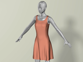

Real-Time Simulation of Deformable Bodies
Real-time simulation of deformable bodies is a highly demanded feature in entertainment, biomedical, and scientific applications, such as virtual plastic surgery and animation of buildings in an earthquake. However, deformable body simulation is often known to be computationally expensive, due to the common use of small time steps for addressing the numerical instability issue. Recent research on strain limiting and position-based dynamics suggests to avoid numerical instability by using geometric constraints to replace elastic forces. These techniques are simple and compatible with GPU acceleration, but they lack the physical meanings of their underlying elastic material properties. The more recent projective dynamics technique describes geometric constraints as specific elastic energies in quadratic forms. This allows the simulation to be iteratively solved by a local constraint step and a global linear system step, the latter of which runs fast on the CPU, but not on the GPU. In general, fast and accurate simulation of deformable bodies is still a challenging problem in computer graphics. I believe that my following research will lead to the ultimate solution to this problem.
GPU-based simulation
My research on GPU-based simulation is based on the fact that deformable body simulation can be formulated into a nonlinear optimization problem and many dynamics solvers can be interpreted as nonlinear optimization algorithms. For example, projective dynamics is essentially a gradient descent method with a constant matrix preconditioner. Therefore, the method converges fast in the first few iterations, but not so much later as the preconditioner gets less ineffective. This new knowledge motivates me to rethink the design of a real-time deformable body simulator, especially on the GPU.
My very first discovery is that the gradient descent method with a Jacobi preconditioner can be highly effective, after being accelerated by the Chebyshev semi-iterative method.
This can be explained by two unique characteristics of deformable body simulation: 1) most elastic models allow the diagonals of their Hessian matrices to be evaluated as the Jacobi preconditioners; 2) the Chebyshev method is effective, as long as the optimization problem is mildly nonlinear within a time step. My experiment showed that the resulting open-source simulator can simulate a deformable body with 60K elements using a h=1/30s time step at 60FPS or more. I believe that this work opens the door to more efficient and reliable simulation of deformable bodies, using other optimization algorithms and/or multi-GPU architectures.
Spectral and spatial acceleration
Model reduction and domain decomposition are two popular techniques used for accelerating deformable body simulation spectrally and spatially.
However, both of them have limitations: model reduction cannot handle deformations outside of a predefined subspace, and domain decomposition cannot easily solve the discontinuity issue on the domain boundary.
To address these issues, my recent work formulated subspace simulation of all of the domains into a unified simulation system. Based on this system, our research team invented new cubature approximation schemes and matrix reordering approaches to further speed up the simulation performance.
This system can efficiently simulate multi-domain deformable bodies under the same material model with limited discontinuity artifact, for the first time as far as we know.
The next research step I will take is to treat these techniques as preconditioners in full-space simulation. Since they do not work as solvers, their limitations should be less problematic. The challenge is how to improve the convergence rate of an iterative solver, in which these techniques are used. My research team will also investigate the combination of the techniques with multi-grid methods, for more speedups in a multi-resolution way.
Adaptive remeshing for fracture simulation
A solid object can fracture when the stress exceeds its yield strength. Simulating such a phenomenon requires the object to be remeshed, which is known to be complex and difficult in the past.
Fortunately, remeshing can be simplified, if we consider surface meshes only. Our research team first studied the adaptive remeshing scheme for multi-layered thin plates.
Based on constrained Delaunay triangulation, this scheme adaptively refines the mesh around fracture fronts to create fine fracture details.
Our team later extended the adaptive remeshing idea to fracture simulation of solids.
Instead of refining volumetric meshes during dynamic simulation, our method refines the fractured surface as post-processing. This method allows highly detailed fracture surfaces to be generated within minutes for the first time. Without the method, physics-based simulators need hours or even days to generate similar details at this level.
RELATED PUBLICATIONS

Huamin Wang. 2015.
[PDF 3.2MB]
[MP4 in H264, 89MB]
[Code in C++]
 Xiaofeng Wu, Rajaditya Mukherjee and Huamin Wang.
2015.
Xiaofeng Wu, Rajaditya Mukherjee and Huamin Wang.
2015.
[PDF 2.4MB]
[MP4 in H264, 97MB]
 Zhili Chen,
Miaojun Yao,
Renguo Feng and Huamin Wang. 2014.
Zhili Chen,
Miaojun Yao,
Renguo Feng and Huamin Wang. 2014.
[PDF 4.0MB]
[MP4 in H264, 113MB]
 Oleksiy Busaryev,
Tamal K. Dey and Huamin Wang.
2013.
Oleksiy Busaryev,
Tamal K. Dey and Huamin Wang.
2013.
[PDF 5.8MB]
[MP4 in H264, 28MB]